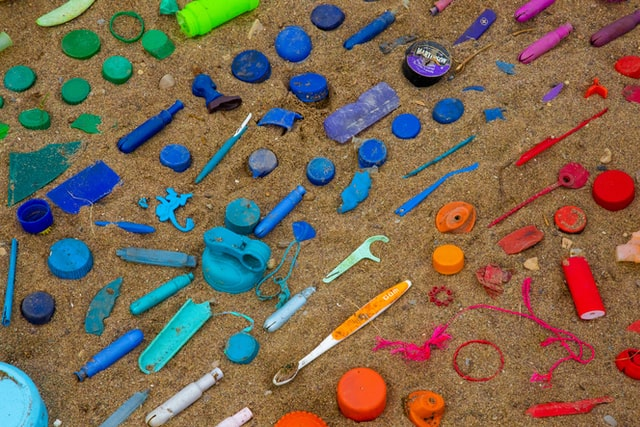

플라스틱(영어: plastic)은 쉽게 원하는 모양으로 가공할 수 있다는 의미의 그리스어 플라스티코스(plastikos)에서 유래했으며, 열과 압력을 가해 성형할 수 있는 고분자화합물이다. 많은 종류가 있으며, 열을 가해서 재가공이 가능한지에 따라서 열가소성수지와 열경화성수지로 나눌 수 있다.
대부분의 플라스틱은 100℃ 이상으로 가열될 때 녹거나 분해된다. 합성 수지(合成樹脂)라고 한다.

플라스틱은 종이처럼 재활용을 거듭할 때마다 품질이 나빠지는 특성을 가지고 있다. 미국 콜로라도 주립대학의 jianbo zhu 박사는 이러한 경향이 플라스틱을 구성하는 고분자들의 종류가 일정하지 않기 때문임에 착안하여, 분자의 종류가 동일해서 몇 번을 재활용해도 본래의 성질이 유지되는 플라스틱을 실용성 있게 만들어내는 데 성공했다. 이후 페트병처럼 플라스틱이 많이 쓰이는 분야부터 차근차근 적용할 계획이다.
재활용이 원활하게 이루어질 경우 수거된 플라스틱은 분류 작업을 거쳐 펠렛 형태로 재가공이 된다.
재활용이 가능하지 않은 플라스틱도 존재하며, 가능하더라도 단가 등의 경제적 이유 등으로 인해 재활용률이 그리 높지 않은 상황이다. 이렇게 버려진 플라스틱의 대부분은 바다로 떠밀려가 태평양 거대 쓰레기 지대와 같은 형태로 바다에 쌓여서 이를 해파리로 착각하고 섭취한 바다생물들에게 소화기 장애와 죽음을 선사한다. 플라스틱은 이후 점점 잘게 쪼개져 미세플라스틱이라고 불리는 자잘한 조각이 되는데, 이는 바다생물의 몸 속에 축적되어 결국 이를 먹는 사람의 몸에도 쌓인다.